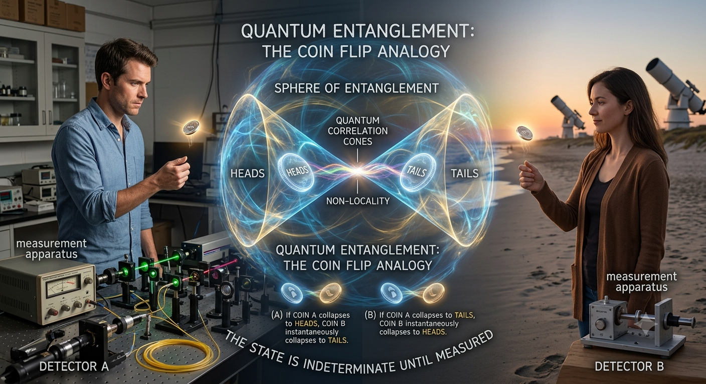

Quantum Explorer · CERN
New to quantum computing? Start here — no physics or programming background needed.
Before learning about quantum computers, let's start with classical computers. Your phone and computer use bits to process information. A bit has only two possible states: 0 (OFF) and 1 (ON)
Quantum computing uses the principles of quantum mechanics to solve certain problems faster than classical computers.
Unlike a bit, which is either 0 or 1, a qubit can exist in both states at the same time. This is called superposition.
Imagine flipping a coin. While it's spinning, it represents both heads and tails. Similarly, a qubit can represent both 0 and 1 until it is measured.
Entanglement links two or more qubits together. Changes to one qubit are correlated with the others, allowing quantum computers to process information in powerful new ways.
Each tab combines a short lesson with an interactive simulation and a quick check. Explore concepts by moving Bloch spheres, applying gates, and running circuits while seeing results update in real time. Your progress is tracked as you learn.
A glossary of the essential ideas behind quantum mechanics and quantum computing — the vocabulary the rest of this app builds on.
A quantum system can exist in a combination of multiple states at once, rather than being locked into just one — like a qubit being part |0⟩ and part |1⟩ simultaneously. It's not that the system is secretly in one state and we just don't know which; the combination is the actual physical state, until a measurement forces it to commit to an outcome.
Every quantum object — electrons, photons, even qubits — behaves like a wave in some experiments (spreading out, interfering with itself) and like a discrete particle in others (arriving at a detector as one localized click). Which behavior shows up depends on what you measure, not on the object switching identities.
The complete mathematical description of a quantum system — everything that can ever be predicted about it, encoded in a set of complex amplitudes. For a qubit, that's the two-amplitude state vector |ψ⟩ = α|0⟩ + β|1⟩ explored throughout this app's Bits & Qubits and Maths Concept tabs.
The rule connecting a quantum state's amplitudes to measurement probabilities: squaring the size of an amplitude gives the chance of observing that outcome. For a qubit α|0⟩ + β|1⟩, that's P(0) = |α|² and P(1) = |β|² — see the Measure tab for this in action.
The moment a measurement happens, a quantum state stops being a mix of possibilities and becomes one definite outcome — irreversibly. The other possibilities aren't hidden somewhere; they're simply gone, which is what makes quantum measurement fundamentally different from just checking a value that was already fixed.
Certain pairs of properties — like a particle's position and momentum — can never both be known to arbitrary precision at the same time. This isn't a limitation of our instruments; it's a built-in feature of how quantum states are described.
Quantum entanglement is a phenomenon in which two or more quantum particles become linked so that the state of one particle cannot be described independently of the others, even when they are separated by large distances. Instead, they share a single joint quantum state.
Measuring one of the entangled particles instantly reveals what the others will show, no matter how far apart they are — yet no signal or energy actually travels between them at the moment of measurement. This can look like faster-than-light communication, but it isn't: each individual measurement outcome is still genuinely random, so there's no way to encode a message using entanglement alone. Explored in depth on the Entangle tab.
When a quantum system has more than one indistinguishable path to the same outcome, the paths' amplitudes combine — reinforcing each other in some places and canceling out in others — producing patterns (like the stripes in the double-slit experiment) that neither path could produce alone. See the Interference and Beam Splitter tabs.
A quantum particle has a nonzero chance of appearing on the far side of an energy barrier it classically shouldn't be able to cross, because its wavefunction doesn't stop dead at the barrier — it decays through it instead of bouncing off. See the Tunnel tab for an interactive wave packet hitting a barrier.
The process by which a quantum system's fragile superposition and entanglement leak away through unavoidable interaction with its surrounding environment, making it behave more and more like a classical system. It's the main practical obstacle to building large, reliable quantum computers.
The master equation of quantum mechanics — it describes exactly how a quantum state evolves smoothly over time, the same way Newton's laws describe how a classical object moves. Every quantum gate in this app is really just a snapshot of this equation's evolution over a fixed slice of time, which is also why gates are reversible: the equation never destroys information, only reshapes it.
Einstein, Podolsky, and Rosen argued in 1935 that quantum mechanics must be incomplete — entangled particles' correlations, they reasoned, could be explained by some shared "hidden variable" fixed in advance, without any real spookiness. Bell's theorem (1964) proved this wrong: no theory based on hidden variables can ever reproduce every correlation quantum mechanics predicts, and decades of experiments have confirmed quantum mechanics' predictions, not the hidden-variable ones.
Measuring a quantum system frequently enough can effectively freeze its evolution — each measurement collapses the state back toward what it already was, before it has a chance to evolve away. Named after Zeno's paradox of the arrow that never seems to move, it's a direct consequence of wavefunction collapse: a "watched" quantum state changes far more slowly than an unwatched one.
The mathematical "space" where every quantum state lives. Each possible quantum state is represented as a vector in a Hilbert space, and the rules of quantum mechanics — superposition, measurement, and evolution — are all expressed as operations on these vectors. A single qubit lives in a two-dimensional Hilbert space, while an n-qubit system lives in a 2ⁿ-dimensional one.
Physical quantities and quantum gates are represented by linear operators acting on quantum states. Applying an operator transforms one valid quantum state into another, making linear algebra the language of quantum mechanics.
An observable is any measurable physical property — such as position, momentum, spin, or energy. Every observable is represented by a Hermitian operator whose eigenvalues are the only measurement outcomes that can ever occur.
If measuring an observable always produces the same result for a particular quantum state, that state is an eigenstate of the observable. The measurement result is the corresponding eigenvalue. Measuring an eigenstate leaves it unchanged, whereas measuring a superposition generally causes wavefunction collapse.
Rather than predicting one definite measurement result, quantum mechanics predicts the average value obtained after repeating the same experiment many times on identically prepared systems. This average is called the expectation value.
Unlike ordinary probabilities, quantum mechanics assigns complex probability amplitudes to possible outcomes. These amplitudes can interfere constructively or destructively, and only their squared magnitudes become observable probabilities through the Born Rule.
A quantum state's phase is invisible in a single measurement but determines how amplitudes interfere. Relative phase — not absolute phase — is what gives quantum interference and many quantum algorithms their power.
Multiplying an entire quantum state by the same complex phase changes nothing physically; this is called a global phase. Changing the phase between components of a superposition changes observable interference patterns and therefore has physical consequences.
Spin is an intrinsic form of angular momentum carried by quantum particles. Unlike ordinary rotation, spin is a fundamental quantum property that comes only in discrete values. Electron spin is the physical realization of many experimental qubits.
No two identical fermions can occupy the same quantum state simultaneously. This simple rule explains the structure of atoms, chemistry, and why matter remains stable.
Particles of the same type are fundamentally indistinguishable. Swapping two identical particles does not create a new physical state — it only changes the wavefunction by a sign (fermions) or not at all (bosons).
Bosons can share the same quantum state, allowing phenomena like lasers and Bose–Einstein condensates. Fermions obey the Pauli exclusion principle, giving rise to atomic structure and electronic materials.
Not every quantum system is perfectly isolated. A density matrix describes both pure quantum states and statistical mixtures, making it the standard tool for describing noisy or partially known quantum systems.
Unlike a superposition, which is genuinely quantum, a mixed state represents classical uncertainty about which quantum state a system is actually in. Density matrices distinguish between these two very different situations.
A quantum measurement is always made relative to a chosen basis. The same state may look definite in one basis but exist as a superposition in another, making basis choice central to quantum computing.
The basic unit of quantum information — like a classical bit, but able to exist in a superposition of 0 and 1 rather than being locked to one value. A qubit's exact state is described by two complex amplitudes and visualized as a point on the Bloch sphere, explored on the Bits & Qubits tab.
A geometric picture of every possible single-qubit state as a point on the surface of a sphere — the north and south poles are |0⟩ and |1⟩, and every other point is some superposition of the two. It turns the abstract algebra of amplitudes into something you can literally see and drag around.
The quantum equivalent of a classical logic gate — an operation that transforms a qubit's state, geometrically a rotation of its point on the Bloch sphere. Unlike classical gates, every quantum gate is reversible: none of them ever throw information away. See the Gates tab for the six fixed gates (H, X, Y, Z, S, T) and their effects.
Every valid quantum gate must be a unitary matrix (U†U = I) — the mathematical condition that guarantees it preserves total probability and can always be undone by its own conjugate transpose. This is why quantum computation, unlike classical AND/OR logic, never destroys information along the way.
A sequence of quantum gates applied to one or more qubits, read left to right — the quantum equivalent of a classical logic circuit. Because gate order generally matters (rotations don't commute), the same set of gates in a different sequence can land the qubits in an entirely different final state; build one yourself on the Circuits tab.
It's physically impossible to create an exact, independent copy of an arbitrary unknown quantum state — a direct consequence of quantum mechanics being linear. This is why quantum information has to be handled so differently from classical bits, which can always be freely copied.
Step-by-step procedures built from quantum gates that exploit superposition and interference to solve certain problems dramatically faster than any known classical algorithm — Shor's algorithm factors large numbers efficiently, and Grover's algorithm searches an unsorted list quadratically faster than any classical search.
A set of techniques for protecting fragile quantum information from decoherence and noise by spreading a single logical qubit's state redundantly across many physical qubits, without ever directly measuring — and so collapsing — the information itself. One of the central engineering challenges standing between today's noisy quantum computers and large-scale, reliable ones.
The milestone at which a quantum computer performs a specific task faster than any classical supercomputer could feasibly manage — "supremacy" for a (possibly contrived) benchmark task, "advantage" for a practically useful one. It demonstrates that quantum effects can be harnessed for real computational power, not just simulated on a classical machine.
A protocol for transferring an unknown qubit's exact state to a distant qubit, using a shared entangled pair plus two classical bits of communication — without ever measuring (and so destroying) the original state directly. Despite the name, nothing travels faster than light: the receiver can't reconstruct the state until the ordinary classical bits arrive, and the original qubit's state is unavoidably destroyed in the process, consistent with the No-Cloning Theorem.
Quantum key distribution lets two parties agree on a shared secret key with security guaranteed by physics rather than computational difficulty — protocols like BB84 encode key bits in qubit states such that any eavesdropper's measurement unavoidably disturbs them, exposing the intrusion. It's a direct practical payoff of the No-Cloning Theorem: an eavesdropper can't secretly copy the qubits to inspect them undetected.
The quantum analog of the classical discrete Fourier transform, implemented as a quantum circuit that runs exponentially faster than any classical equivalent. It's the key subroutine inside Shor's algorithm — the step that extracts the hidden periodicity used to factor large numbers — and appears throughout quantum algorithms wherever a hidden pattern needs to be read out of a superposition.
Multiple qubits combine through the tensor product rather than ordinary addition. Two qubits therefore require four amplitudes, three qubits require eight, and n qubits require 2ⁿ, which is the origin of quantum computing's enormous state space.
A system of several qubits cannot always be described as independent single-qubit states. Some states factor into separate qubits, while others become entangled and require one combined description.
Controlled gates perform an operation only when another qubit has a particular value. The CNOT gate is the simplest example and is the essential building block for creating entanglement.
The SWAP gate exchanges the quantum states of two qubits without measuring them. It is widely used to move information around a quantum processor.
A small collection of gates is sufficient to approximate any quantum computation to arbitrary accuracy. Examples include {H, T, CNOT} and {Rx, Ry, CNOT}.
Because a quantum computer can prepare a superposition of many inputs simultaneously, one operation acts on all of them at once. The challenge is extracting useful information through interference rather than trying to read every result.
Many quantum algorithms treat part of a problem as a black-box function called an oracle. The algorithm gains speed by querying the oracle in quantum superposition.
Ancilla qubits are temporary helper qubits used during computations, error correction, and arithmetic before being reset or discarded.
Although measurement appears earlier, quantum computing treats it operationally. Measuring a qubit converts fragile quantum information into an ordinary classical bit, ending coherent evolution.
Some quantum computers allow measurements during computation rather than only at the end. Later gates can depend on these measurement outcomes, enabling error correction and adaptive algorithms.
Measurement results obtained during a quantum circuit can determine which later gates should be applied, combining classical control with quantum evolution.
Quantum information is information stored in quantum states. Unlike classical information, it can exploit superposition and entanglement, enabling entirely new forms of computation and communication.
A quantum channel mathematically describes how quantum information changes while traveling through space or interacting with noise.
Fidelity measures how similar two quantum states are. It is widely used to benchmark quantum hardware, gates, and error correction.
Trace distance quantifies how distinguishable two quantum states are. It gives the maximum probability of telling them apart using any possible measurement.
A numerical measure of how strongly different parts of a quantum system are entangled. It plays a central role in condensed matter physics, quantum field theory, and quantum gravity.
A technique for reconstructing an unknown quantum state by making many measurements in different bases.
Rather than reconstructing a state, process tomography reconstructs an unknown quantum gate or operation by studying how it transforms many known input states.
The current era of quantum computers is called the Noisy Intermediate-Scale Quantum (NISQ) era: devices contain tens to thousands of imperfect qubits but cannot yet run fully fault-tolerant algorithms.
A future generation of quantum computers capable of performing arbitrarily long computations despite hardware errors through quantum error correction.
The leading quantum error-correcting code, encoding one logical qubit into many physical qubits arranged on a two-dimensional lattice.
Physical qubits are the hardware qubits that suffer from noise. Logical qubits are protected, error-corrected qubits encoded across many physical ones.
Certain quantum gates cannot be implemented directly in many fault-tolerant architectures. Instead, specially prepared "magic states" are consumed to perform them, making magic-state distillation one of the largest costs in scalable quantum computing.
One of quantum computing's original motivations: efficiently simulating the dynamics of molecules, materials, and quantum field theories governed by a Hamiltonian. Many researchers — including those working on lattice field theories and quantum chemistry — consider this one of the most important long-term applications of quantum computers.
A foundational quantum algorithm for estimating the eigenvalues of unitary operators. It underpins Shor's algorithm and many algorithms for quantum chemistry and Hamiltonian simulation.
A computational model in which the system remains in its ground state while its Hamiltonian changes slowly. If the evolution is slow enough, the final ground state encodes the solution to an optimization problem.
Instead of computing primarily with gates, computation proceeds by preparing a large entangled resource state (a cluster state) and then performing carefully chosen measurements. The measurements themselves drive the computation.
The mathematical language behind qubits — complex numbers, vectors, matrices, state vectors, Dirac notation, and tensor products.
A qubit's amplitudes aren't plain real numbers — they're complex numbers, each with a real part and an imaginary part. That extra dimension is what makes phase (and interference) possible.
A qubit state α|0⟩ + β|1⟩ has complex amplitudes α, β. Only their squared moduli |α|², |β|² are directly observable (as measurement probabilities) — the relative phase between them is invisible to a single measurement but drives interference.
Pick one gate and see its immediate effect — classical or quantum
Nothing yet — the qubit is parked at |0⟩, pointing straight up. Pick a gate on the left and watch where it sends the arrow.
Each fixed gate's action on the two basis states — rotation gates (Rx/Ry/Rz) aren't included since their output depends on a runtime angle, not a fixed table.
Every gate on the left is a unitary matrix (U†U = I) — not by convention, but because a gate is really just the qubit's own Schrödinger-equation time evolution, which always preserves total probability. One direct consequence: quantum gates never destroy information. Apply any gate, then its conjugate transpose, and the qubit lands back exactly where it started — there's no quantum equivalent of a classical AND gate quietly throwing a bit away.
Classical gates combine bits with strict rules; quantum circuits walk a qubit through a route of gates, picking up rotations — pick a builder below
Lay down a path by clicking gates above — each one claims the next checkpoint on the wire. Press Run and the qubit walks it from |0⟩ to the end, one stop at a time.
The four maximally entangled two-qubit states — pick one, prepare it, and watch its signature correlation appear across repeated measurements
Start at |00⟩, apply H to qubit A, then CNOT (A → B).
Every Bell state sits at one of four corners, set by two independent choices: which row (same or opposite measurement outcomes) and which column (a + or − relative phase). Click any corner to prepare it.
Exact Born-rule probabilities for |Φ⁺⟩ — no sampling needed, these follow directly from squaring each amplitude.
Φ⁺ and Φ⁻ (and likewise Ψ⁺ and Ψ⁻) give identical probability distributions above, because a relative phase — the − sign — doesn't change any computational-basis probability, only |amplitude|² does. The two states are still physically distinct: the phase becomes visible the moment you interfere the qubits with each other, for example by applying a Hadamard to each qubit before measuring — that's exactly the extra step Bell-inequality tests and superdense coding rely on to tell all four states apart.
The bars below are odds, not a preview — measuring forces the qubit to answer a question it was genuinely undecided about, and there's no taking it back
Right now the qubit hasn't committed to anything — it genuinely holds both |0⟩ and |1⟩ at once, weighted by the bars above. Hit MEASURE and you're forcing it to answer a yes/no question it was actively avoiding.
This isn't just an app simplification — it's one of the axioms of quantum mechanics. Measuring a qubit |ψ⟩ = α|0⟩ + β|1⟩ returns 0 with probability |α|² and 1 with probability |β|² (the Born rule), and immediately afterward the state has collapsed to whichever outcome came up — the other possibility is simply gone, not just hidden.
Note what's absent: nothing in this rule says which outcome you'll get on any single run — only the odds across many identical qubits, which is exactly what the histogram below is for.
This is the only way to actually confirm those odds — ask the same question of many identical qubits and watch the histogram settle into the predicted split. A single qubit only ever gives you one answer; the pattern only shows up across a crowd.
Bell state (|00⟩ + |11⟩)/√2 — neither qubit has a definite state alone; measuring one instantly determines the other

Quantum entanglement is a phenomenon in which two or more particles become linked so that their quantum states can no longer be described independently of one another — even when the particles are separated by enormous distances. Instead of two separate qubits each carrying their own state, the pair shares a single joint state, like the Bell state (|00⟩ + |11⟩)/√2 shown above: a 50/50 mix of "both measured 0" and "both measured 1," with no way to break it down into what qubit A or qubit B is doing on its own.
Entanglement isn't produced by some mysterious force reaching between the particles — it's created locally, the moment two qubits interact (here, with a Hadamard gate followed by a CNOT — build the same recipe gate by gate on the Circuits tab), and it persists afterward no matter how far apart the qubits later travel. Einstein famously called the resulting correlations "spooky action at a distance," since measuring one qubit appears to instantly affect the other.
The two cards below work out the details behind that intuition: why a state like this genuinely can't be described as two separate qubits, and why the instant correlation still can't be used to send a signal faster than light.
Two independent qubits always combine by tensor product (⊗): stack qubit A's 2-entry vector against qubit B's, multiplying every pair of entries to build a 4-entry joint vector. Every product state — anything you could build in the Two Qubit panel on the Bits & Qubits tab — factors apart into two separate qubits this way:
The Bell state above is also a 4-entry vector — [1,0,0,1]T/√2 — but try to factor it back into [a,b]T⊗[c,d]T = [ac,ad,bc,bd]T and there's no solution: ad = 0 and bc = 0 force one of each pair to be zero, which would also zero out ac or bd — no single-qubit states A and B multiply together to reproduce it.
That's the literal, checkable definition of entanglement: a joint state that can't be split back into two independent single-qubit factors. Neither qubit alone has a well-defined state — only the pair does.
This setup is a version of the Einstein-Podolsky-Rosen (EPR) thought experiment: Alice measures Qubit A and instantly knows Qubit B's outcome, even if B is light-years away. It looks like faster-than-light signaling — but it isn't.
Alice can't choose which outcome she gets — that's still random, same 50/50 odds as any single qubit. So there's nothing for her to control, and therefore nothing she can encode into a message. The correlation is only visible after the fact, once Alice and Bob compare notes over an ordinary (slower-than-light) channel. No energy, no information, and no signal actually crosses the distance between them at the moment of measurement.
Fire a wave packet at a wall taller than its own energy. Classically it always bounces. Quantum mechanically, a piece of it slips through anyway
A wave packet is about to launch toward a barrier. Watch the probability cloud — not a solid ball — hit the wall.
Two open paths and a screen keeping score. Every dot on the right is one particle landing — yet together they paint a wave
Both slits are open and the paths are indistinguishable. Watch the dots pile up one at a time — and slowly reveal stripes.
Every dot on the screen is one particle landing at one spot — that part is completely ordinary. What isn't ordinary is where those dots are allowed to land. Fire particles at the double slit one at a time, with no way for two particles to ever meet mid-flight, and the dots still pile up into stripes. There's no crowd of particles interfering with each other — each individual particle's own wavefunction passes through both slits at once and interferes with itself. That's the actual mystery here, not just "waves make patterns."
A1 and A2 are the amplitudes for "the particle went through slit 1" and "through slit 2," and φ(y) is the extra distance one path travels to reach point y, converted to a phase. Classical probabilities would just add: P = P1 + P2, a flat pile with no stripes. Quantum amplitudes add first and get squared afterward — and squaring a sum produces that 2|A1||A2|cos φ cross term, which is positive at some y (bright fringes), negative at others (dark fringes), and is the entire reason stripes exist at all.
Double slit — both paths stay open and genuinely indistinguishable, so the cross term survives and you get fringes. Single slit — only one amplitude exists at all, so there's nothing for it to interfere with; I = |A1|², a plain diffraction blob. Which-path — both slits are still physically open, but tagging each particle's path (the small detector dots on the plate) means a which-path measurement now exists for every hit. Averaged over those measurements the cross term cancels exactly, leaving the flat I = |A1|² + |A2|² you'd expect from ordinary particles — two humps, no stripes. Nothing needs to physically jostle the particle for this to happen; merely making the path knowable in principle is enough to erase the pattern.
That's why the ripple animation on the left and the dot-by-dot screen on the right are shown side by side: the ripples are the continuous wave picture that predicts where the cross term is constructive or destructive, and the screen is what actually gets measured — one random, all-or-nothing click at a time. The wave never lands anywhere; only the particle does. The stripes are the wave's fingerprint on where the particles were and weren't allowed to click.
A single photon hits a 50/50 beam splitter and is randomly reflected to detector A or transmitted to detector B — one photon, one random outcome, never a photon split in half
A photon is about to launch toward the beam splitter. Fire it and watch which detector clicks.
Send atoms one at a time through a magnetic field and watch spin — a purely quantum property — reveal itself as a small number of discrete spots, never a continuous smear
Same θ as the Bloch sphere — θ = 0° prepares spin certainly up, θ = 180° certainly down, and anything in between is a genuine superposition of the two.
An atom is about to enter the magnet. Fire it and watch which detector clicks.
The deflecting force comes from the field's gradient, not just its strength: Fz ≈ μz·∂Bz/∂z, where μz is the atom's magnetic moment along the field axis. A uniform field (∂Bz/∂z = 0) would exert no net force at all, no matter which way the moment pointed — which is exactly why the two poles above are shaped differently instead of just being strong magnets: only a genuinely inhomogeneous field produces any deflection.
Classically, μz could point in any direction, so a beam of randomly-oriented atoms should smear continuously across the screen, from fully deflected up to fully deflected down. When Stern and Gerlach actually ran this experiment in 1922, silver atoms landed in exactly two discrete spots — nothing in between, no matter how the magnet was tilted. That's the same quantization already built into every qubit in this app: a measurement returns one of exactly two outcomes, never a partial result.
Every atom below already has a definite spin — it's the "up" output of a first magnet, with the "down" half physically blocked. Now send it through a second magnet:
Same axis as before — fire an atom to confirm it always lands the same way.
Click any concept to open its simulation